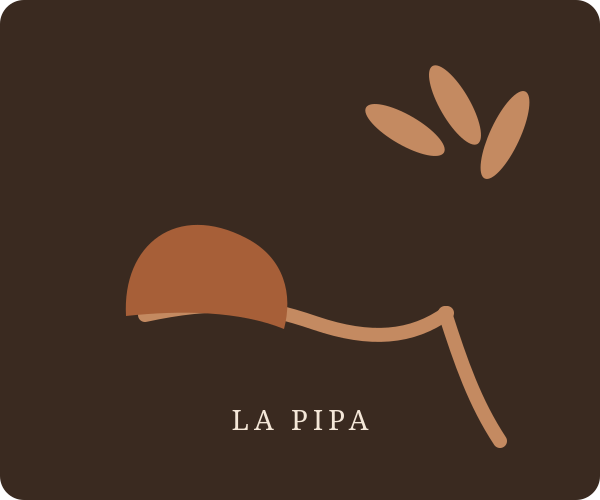

ENCICLOPEDIA DEL TABACO DE PIPA
Descubre. Compara. Conoce.
Pipateka reúne fichas, perfiles y reseñas de mezclas de tabaco de pipa, con información organizada por marca, tipo, composición y disponibilidad.
Explorar catálogo
18+ · Aviso de salud. El tabaco contiene nicotina, es adictivo y perjudica la salud. Pipateka es un proyecto informativo y no recomienda el consumo de tabaco.
CATÁLOGO
Tabacos de pipa
CRITERIO EDITORIAL